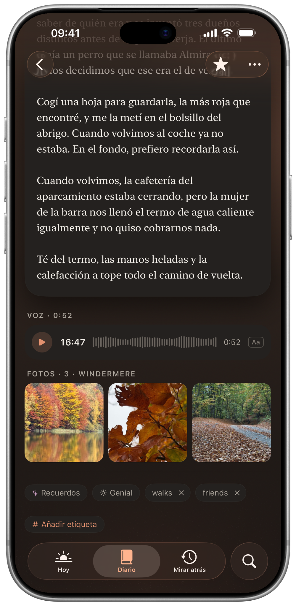
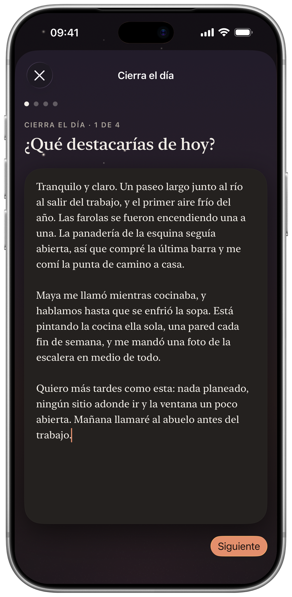
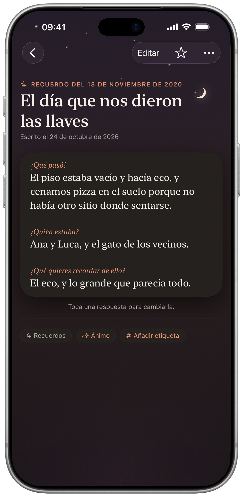
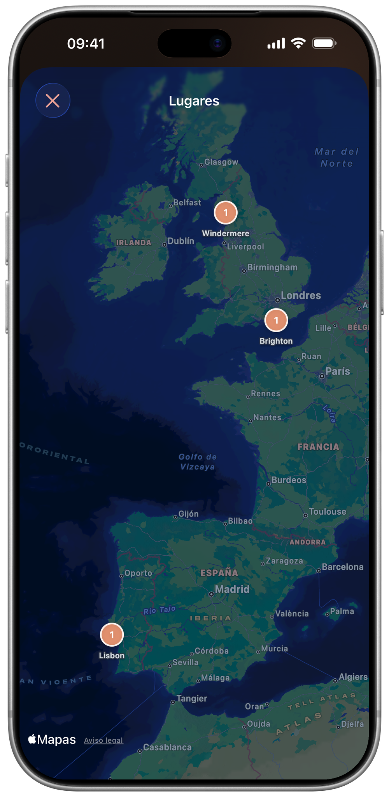
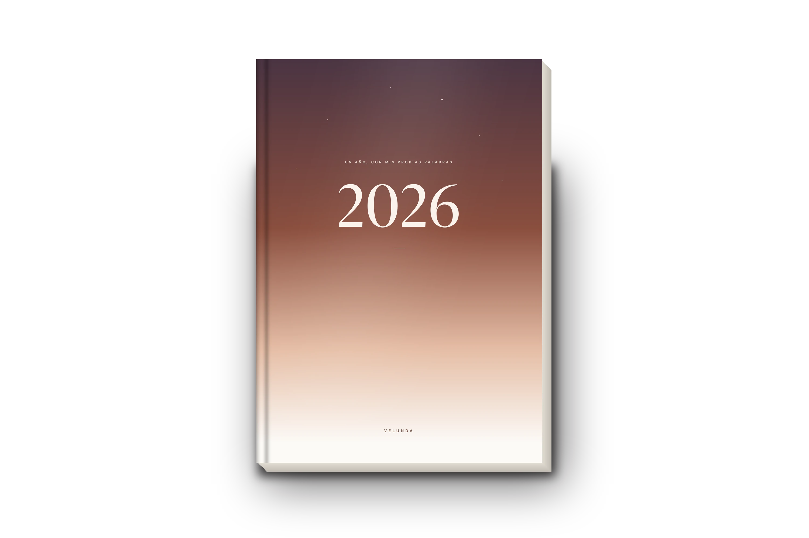
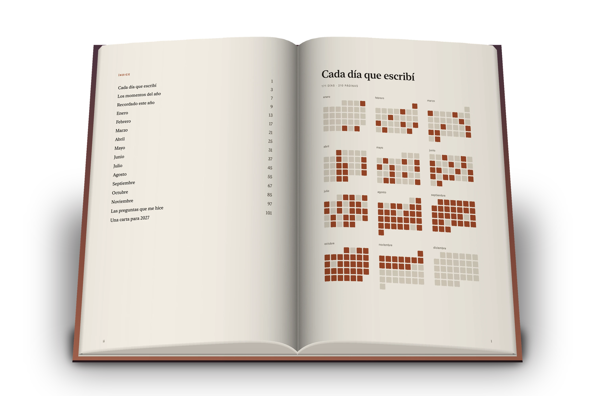
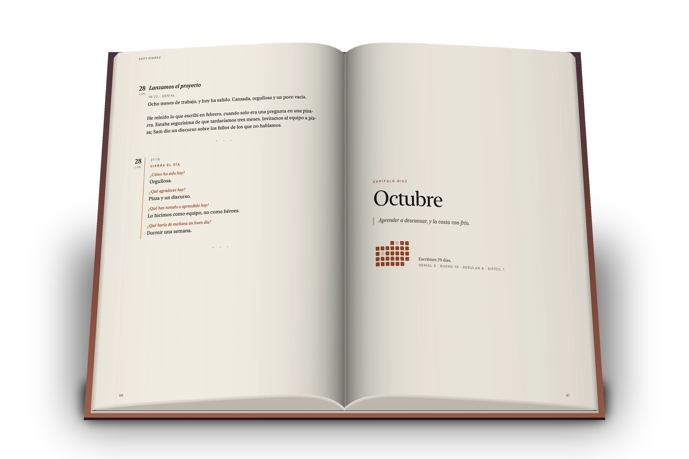
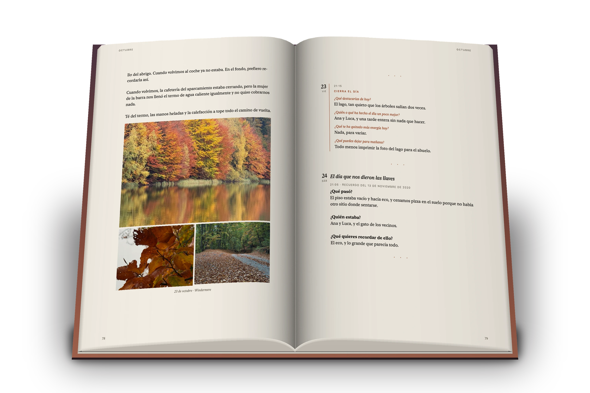
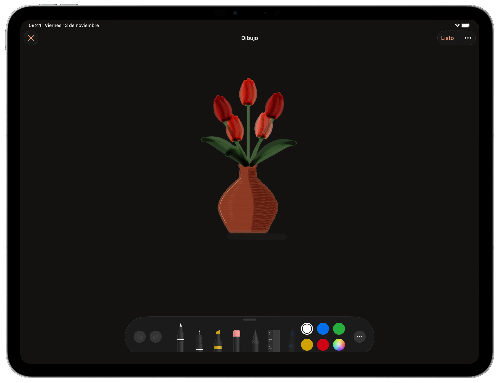
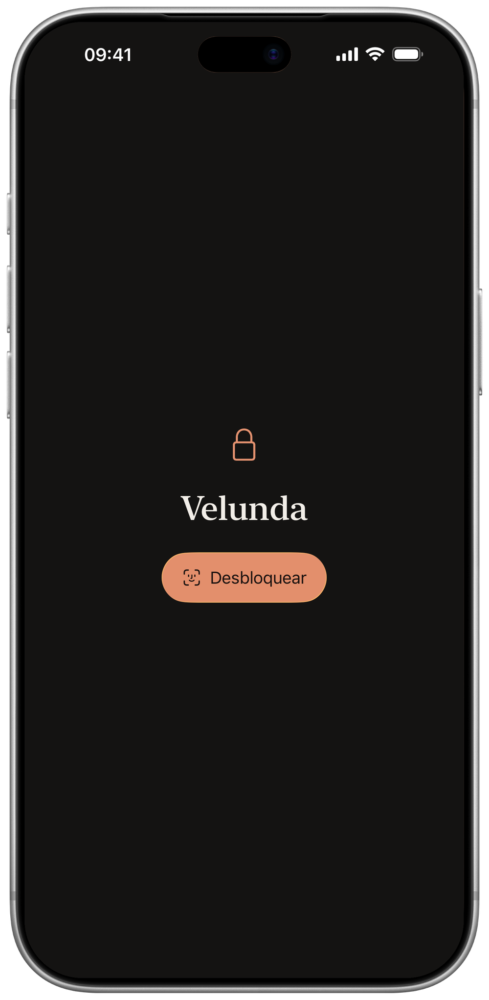

Sin cuentaSin anunciosSin rastreoSin IASin suscripcionesSin rachas
Un día con Velunda
Unos minutos al día, guardados durante años.
Cada mañana hay una pregunta para empezar, y otra si esa no te encaja. Las plantillas te ayudan por la mañana, por la noche, en los días difíciles y ante las grandes decisiones, así que siempre tienes por dónde empezar.
Cuando quierasPalabras, fotos, voz
Escríbelo, enséñalo o, simplemente, dilo.
Añade hasta diez fotos a una página y Velunda anota la ciudad donde se hizo cada una. ¿No tienes tiempo de escribir? Graba, y Velunda puede transcribir lo que has dicho, en tu propio dispositivo.

Noche21:15
Despídete del día.
Cuatro preguntas breves antes de dormir, y puedes saltarte las que quieras. Una palabra o una página: de una forma u otra, el día queda guardado.

Años despuésEl mismo día
El pasado vuelve solo.
Escribe un recuerdo con el día en que pasó de verdad: tu primer piso, un verano de hace años. Cada año, en esa fecha, Velunda te lo trae de vuelta.

Mirar atrásCada viaje, cada ciudad
Todos tus viajes en un solo mapa.
Lugares reúne tus páginas ciudad a ciudad. Toca un punto y vuelves a esa playa, a esa calle, a ese lago.

Al final del año
Tu año, convertido en un libro de verdad.
Velunda reúne todo lo que escribiste, fotografiaste y dibujaste en un libro que puedes imprimir, encuadernar y poner en la estantería. Desplázate para hojear uno.
La portada
Tu título, tu nombre.
Una portada con los colores del amanecer o del atardecer, con el título que le des a tu año. Y una dedicatoria, si quieres.

Las primeras páginas
Cada día que escribiste, de un vistazo.
El libro empieza con el índice y el calendario de todo el año: un cuadrado por cada día que escribiste.

Por dentro
Un capítulo para cada mes.
Cada uno se abre con una frase tuya y con cómo fue el mes, y sigue con todos los días que escribiste y cada noche que cerraste.

Tus fotos
Las imágenes, donde les corresponde.
Las fotos acompañan a las palabras con las que van, con el día y la ciudad debajo. Creado en tu dispositivo y nunca subido a ningún sitio.

iPad y Apple Pencil
Espacio para escribir. Sitio para dibujar.
En el iPad, la página tiene espacio para respirar. Y los días en que no salen las palabras, coge el Apple Pencil: el dibujo se queda con la página y acaba en tu libro.

Privado de verdad
Lo que piensas no es asunto de nadie.
Velunda no tiene cuentas ni servidores propios. No recopila nada, y todo lo que escribes está cifrado de extremo a extremo.

Protegido con Face ID
O con Touch ID, o con tu código. Los widgets y los recordatorios nunca muestran lo que has escrito.
Cifrado, en todos tus dispositivos
Tu diario se sincroniza con tu propio iCloud, así el iPhone y el iPad están siempre al día. Cada palabra, cada foto y cada grabación están cifradas.
Tu voz se queda contigo
Las grabaciones se transcriben en tu dispositivo. El audio nunca se envía a nadie.
Siempre tuyo
Exporta una copia de seguridad completa, en Markdown o en PDF cuando quieras, con fotos y grabaciones incluidas.
Precio
Pruébalo todo gratis. Después, un único pago.
Tu primera semana
Gratis, con todo incluido.
Siete días con todas las funciones, desde la primera página. Sin registros.
Después
Tuyo para siempre.
Una sola compra, sin suscripciones. Con En familia, tu familia también lo tiene. Y decidas lo que decidas, cada página que escribiste sigue siendo tuya: siempre podrás leerla, buscarla y exportarla.
Preguntas
Conviene saberlo.
¿Puede alguien más leer mi diario?
No. Velunda no tiene cuentas ni servidor propio. Tu diario se queda en tus dispositivos y en tu iCloud privado, donde todo lo que escribes está cifrado de extremo a extremo.
¿Qué pasa después de la semana gratis?
Para escribir y editar necesitas la compra única. Todo lo que ya has escrito se puede seguir leyendo, buscando y exportando, lo compres o no.
¿Se sincroniza entre el iPhone y el iPad?
Sí, mediante iCloud, cuando los dos dispositivos usan la misma cuenta de Apple.
¿Se suben mis fotos y grabaciones a algún sitio?
Solo a tu propio iCloud, cifradas, si lo usas. Las grabaciones se transcriben en tu dispositivo y el audio no sale de él de ninguna otra forma. Para indicar la ciudad donde se hizo una foto, Velunda consulta su ubicación a Mapas de Apple y solo guarda la ciudad; puedes desactivarlo en Ajustes.
¿Puedo llevarme mi diario?
Sí. Puedes exportar una copia de seguridad para volver a importarla, archivos Markdown con tus fotos y grabaciones, un PDF o los tres en un solo archivo comprimido.
¿En qué idiomas está?
Español, inglés, italiano, francés y alemán.